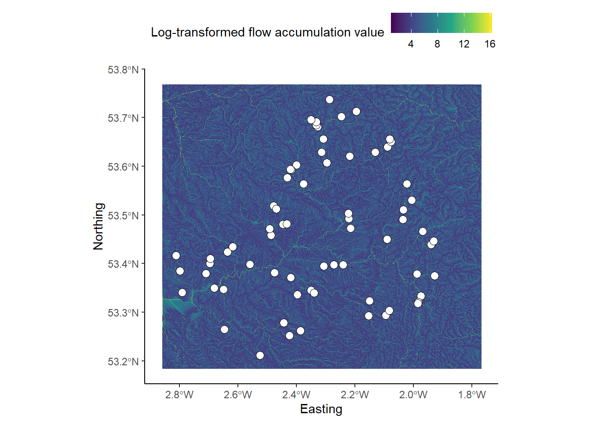

Chapter 6 Eskdale III - Flow routing
Overland and near-surface water flow can be modelled using DEMs if we assume that surface topography is the sole factor which influences the distribution of water. One very simple model routes all water from a particular grid cell in a DEM to a single neighbouring cell (i.e. water is not partitioned between multiple neighbours). This ‘D8’ (8 direction) method sets the flow direction toward the lowest of the eight neighbouring cells, in relation to the centre cell.

Figure 1: Schematic of the D8 method. The elevation value of the centre cell is 8 m (dark blue). Under atmospheric pressure, water flows to areas of lower elevation (< 8 m; light blue) and does not flow to areas of higher elevation (>8 m; grey). In this case, the D8 method would route all the water from the centre cell into the bottom left cell, as it has the lowest value (4 m).
Using this method, water flow is allowed in one of eight possible directions (↑ ↗ → ↘ ↓ ↙ ← ↖), assuming that water will travel along the steepest downslope path. In turn, the method is sometimes referred to as the steepest descent method. Based on the \(3 * 3\) cell neighbourhood shown in Figure 1, flow would be directed from the centre cell (8 m elevation) to the southwest cell (4 m elevation).
6.1 DEM pre-processing: flow enforcement
One common issue encountered when performing hydrological analyses is the presence of sinks, which interrupt the drainage network. When sinks are encountered, flow direction is undefined when a grid cell, or group of grid cells, is lower than all neighbouring cells (see Figure 2) When sinks are encountered, and when there are no downslope neighbours, all water that enters a cell is unable to escape. These features are referred to as pits if they are a single cell in size, and depressions if they consist of groups of cells.

Figure 2: Schematic of a sink in a DEM. In this \(5 * 5\) matrix, water is routed into the top right cell (9 m) and then is routed to the lowest elevation cell at each step (9 m → 8 m → 7 m → 6 m → 2 m) using the D8 method (blue cells). However, the drainage network is interrupted by a sink at the 2 m cell (orange), as all neighbouring cells are of higher elevation.
Sinks can often be artefacts of the data and should be removed during DEM pre-processing. Pre-processing involves altering the elevations of the DEM in a way that enforces continuous flow-paths. However, it is important to realise that sometimes these ‘digital depressions’ reflect actual features in the landscape, and should be preserved during flow modelling. This is a particular issue for hydrological analysis of karst environments, where water can be routed into dolines and fractures. However, for our work, we will assume that all depressions in DEMs are artefacts and are justified in being removed.
Several methods have been developed for removing depressions from DEMs. These methods vary greatly in terms of their sophistication and impact on the DEM. The two most common depression removal methods Figure 3 are:
- depression filling, which raises cells within a depression to the elevation of the outlet cell;
- depression breaching, which digs a trench from a depression’s bottom to some point downslope.

Figure 3: Schematic of depression filling and breaching in a DEM. Using the same values from Figure 2, original values are modified to allow water to escape the sink (orange). Depression filling has raised the value of the sink (2 m → 4 m), while depression breaching has lowered the value of a neighbouring cell (3 m → 1 m). In this simplified example, the outputs of these two distinct approaches are identical but care should be taken when working with real world data as they will often produce different results.
Not all interruptions to flow routing are caused by depression cells. Often, DEMs contain extensive flat regions (areas of equal elevation). Flat areas interrupt flow routing in the same way as depressions. Cells within a flat region do not have downslope neighbours, and therefore, flow routing is impossible on flat sites without pre-processing. Correction of flow direction on flat sites typically involves finding an outlet cell, forcing flow from cells adjacent to the outlet to the outlet, and continuing backwards in an iterative manner (e.g., Jenson and Domingue (1988)).
6.1.1 Application
The DEM we are working with is centred on the Upper Eskdale catchment; an upland valley which drains the highest mountain in England (Scafell Pike; 978 m), as shown below:

Figure 4: Upper Eskdale panorama, viewed from Harter Fell [Location: 54.386907, -3.205004, Elevation: 649 m]. The catchment ranges in elevation from 978 m (Scafell Pike) to ~160 m at the catchment outlet (white circle), and is ringed by numerous summits with elevations in excess of 800 m (white triangles). The catchment has an area of ~15.7 km2 and all water which falls with the catchment ultimately drains to the Irish Sea via the River Esk.
The DEM we are working with was downloaded from EDINA Digimap, has a cell size of 10 m and uses the British National Grid (BNG), a projected coordinate Reference System [EPSG:27700].
Unfortunately, we don’t have time in this course to delve into the exciting world of map projections, although these are covered excellently by Dr. Jonny Huck in the Semester 2 course Understanding GIS. However, it is important to know that different map projections have different uses and work more/less effectively in different spatial areas. As we are working within the UK, it makes sense to use a map projection which is tailored to the UK (e.g. BNG) as this minimises different types of map distortion (length, shape, area).
When loaded into R using the raster package and plotted using ggplot2 and ggspatial, our DEM can be visualised as follows, where the outlet point (white circle) and summits (black triangles) match those shown in Figure 4.

To accentuate areas of relief, the DEM has been combined with a semi-transparent hillshade layer, which is shown below:

To evaluate the effects of depression breaching and filling, we’re going to
DEM of the Upper Eskdale catchment
# Sets file path for DEM
dem <- here("data", "practical_1", "dem_10m.tif")
# Breach and fills depressions
wbt_fill_depressions(dem, here("output", "practical_1", "dem_10m_fill.tif"))
wbt_breach_depressions(dem, here("output", "practical_1", "dem_10m_breach.tif"))6.2 Calculating Flow Parameters: Pointers
6.3 Comparing flow algorithms
#——————– Analysis ———————
# Sets file path for DEM
dem <- here("data", "practical_1", "dem_10m.tif")
# Breach and fills depressions
wbt_fill_depressions(dem, here("output", "practical_1", "dem_10m_fill.tif"))
wbt_breach_depressions(dem, here("output", "practical_1", "dem_10m_breach.tif"))
# Calculates D8 pointer
wbt_d8_pointer(here("output", "practical_1", "dem_10m_breach.tif"),
here("output", "practical_1", "dem_10m_D8_pointer.tif"))
# Calculates accumulation file
wbt_d8_flow_accumulation(here("output", "practical_1", "dem_10m_breach.tif"),
here("output", "practical_1", "dem_10m_flow_accumulation.tif"))
# Extracts streams, accumulation threshold of 500
wbt_extract_streams(here("output", "practical_1", "dem_10m_flow_accumulation.tif"),
here("output", "practical_1", "dem_10m_streams_act500.tif"),
500)
# Snaps pour points to stream network, snap distance in map units (50 = 50 m)
wbt_jenson_snap_pour_points(here("data", "practical_1", "pour_point.shp"),
here("output", "practical_1", "dem_10m_streams_act500.tif"),
here("output", "practical_1", "dem_10m_pour_point_snapped.shp"),
snap_dist = 50)
# Watershed from pour points
wbt_watershed(here("output", "practical_1", "dem_10m_D8_pointer.tif"),
here("output", "practical_1", "dem_10m_pour_point_snapped.shp"),
here("output", "practical_1", "dem_10m_watersheds.tif"))
# Converts watershed to vector format (polygon)
wbt_raster_to_vector_polygons(here("output", "practical_1", "dem_10m_watersheds.tif"),
here("output", "practical_1", "dem_10m_watersheds.shp"))
# Converts streams to vector format (lines)
wbt_raster_to_vector_lines(here("output", "practical_1", "dem_10m_streams_act500.tif"),
here("output", "practical_1", "dem_10m_streams_act500.shp"))